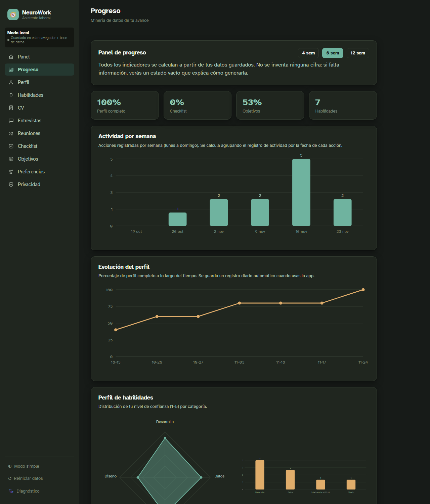
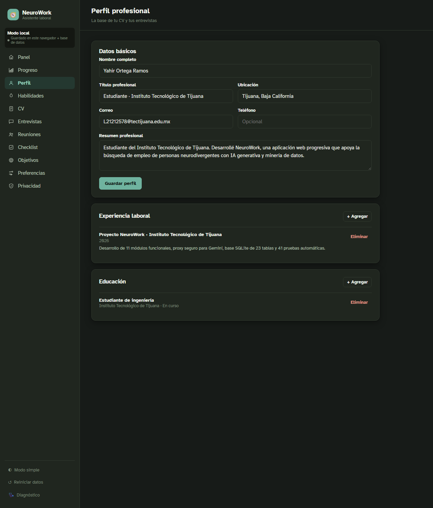
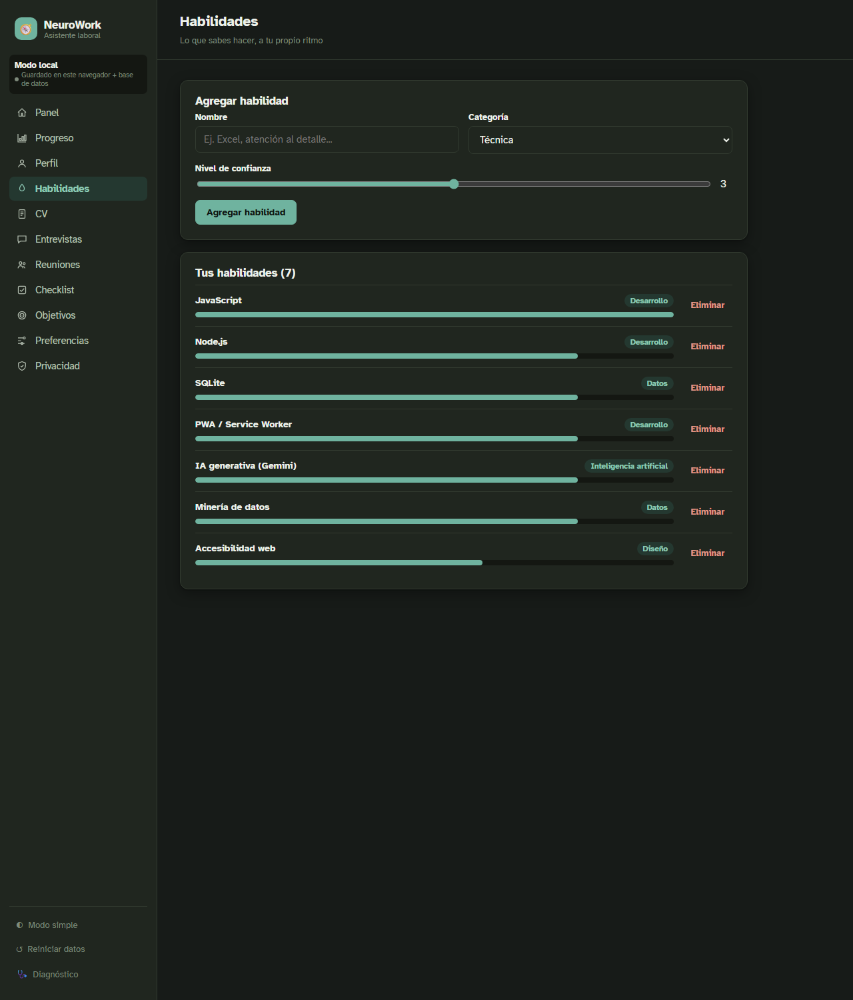
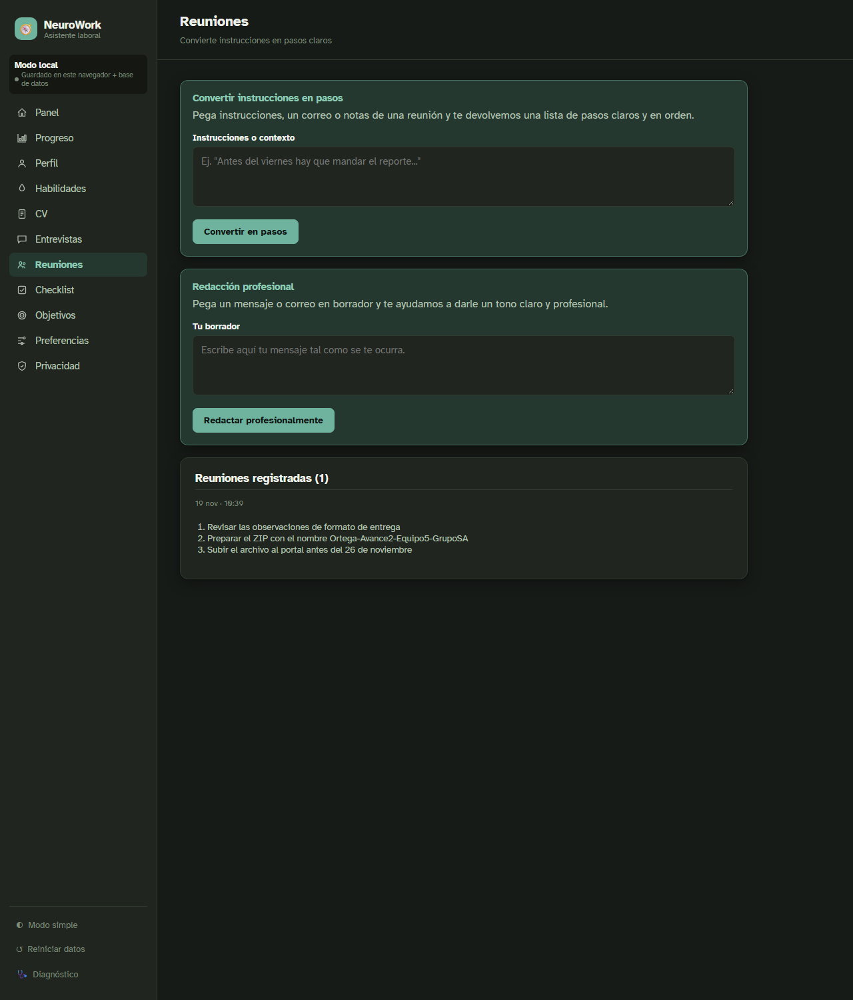
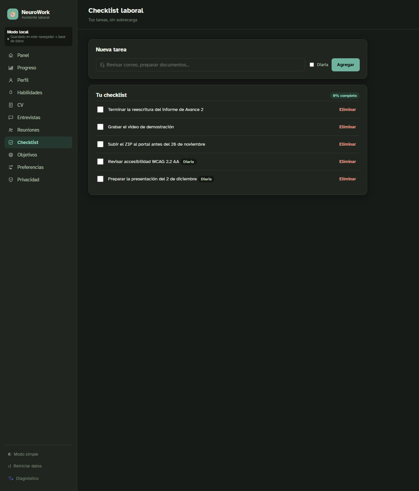
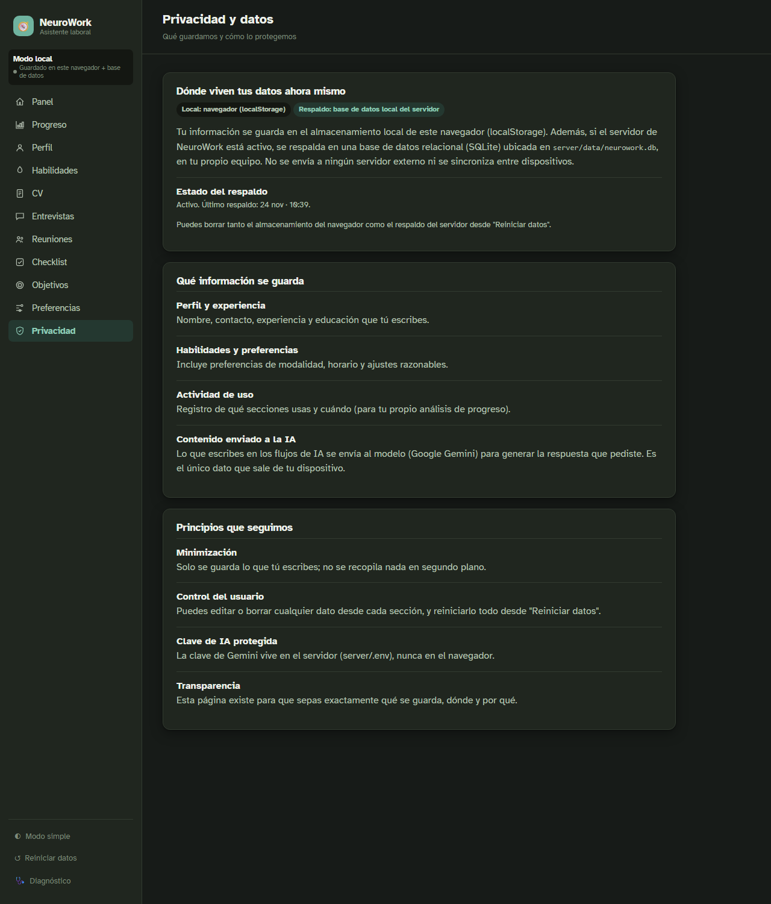
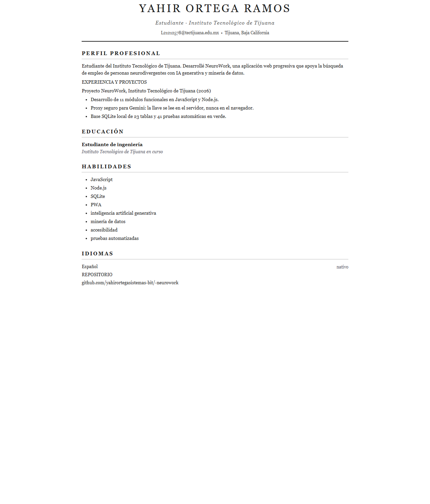

Fig. 1. Panel principal: resumen del progreso del día (perfil,
habilidades, checklist, objetivos), actividad reciente y patrones de dificultad.
Equipo 5 (trabajo individual)
Instituto Tecnológico de Tijuana, Tijuana, Baja California, México
L21212578@tectijuana.edu.mx
Avance 2 · Repositorio: https://github.com/yahirortegasistemas-bit/-neurowork
Esta entrega ya no es solo un diseño. Los once módulos están en la interfaz y se puede navegar entre ellos.
| Módulo | Estado | Función principal |
|---|---|---|
| Panel | Funcional | Resumen del día: perfil, checklist, objetivos y dificultad |
| Progreso | Funcional | Minería de datos y gráficas de avance |
| Perfil | Funcional | Datos de contacto, experiencia y formación |
| Habilidades | Funcional | Registro con categoría y nivel de confianza (1–5) |
| CV | Funcional | Generación/adaptación con IA y cuatro plantillas descargables |
| Entrevistas | Funcional | Cuatro pestañas: vacante, simulador, preparación y respuestas |
| Reuniones | Funcional | Instrucciones convertidas en pasos + redacción asistida |
| Checklist | Funcional | Tareas con repetición diaria |
| Objetivos | Funcional | Metas con porcentaje de avance |
| Preferencias | Funcional | Modalidad, horario y ajustes razonables |
| Privacidad | Funcional | Transparencia sobre el manejo de datos |
El módulo que más trabajo me tomó fue el de CV. Toma los datos del perfil, genera un
borrador con IA, permite adaptarlo a una vacante pegada por la persona y exporta un archivo
.doc. Por ahora la exportación es .doc, no PDF; el PDF quedó anotado
para la fase final. Hay cuatro plantillas (Moderno, Ejecutivo, Clásico y
Minimalista) y se puede ver el resultado antes de descargarlo. Las fechas salen
alineadas a la derecha.
Sobre el inicio de sesión: no hay, y no fue un olvido. Como la aplicación guarda datos personales, poner un login significaría tener un servidor de cuentas y almacenar esa información fuera del equipo. Preferí que todo se quede en la misma máquina. Si más adelante se necesita que varias personas usen el sistema, la decisión se puede revisar.
Para ejecutarlo necesito Node.js 22 o superior y un navegador moderno. Arranco el servidor
con node server/server.js y abro http://127.0.0.1:8787. La dirección
importa: si abro el index.html como archivo (file://), la llamada a
la IA falla y las funciones PWA tampoco responden bien.
Una demostración corta sigue este orden:
/api/db).Todo lo que es local sigue funcionando sin conexión gracias al Service Worker. La IA es lo único que necesita internet.
En vez de instalar un paquete externo usé el módulo que ya trae Node 22,
node:sqlite. El archivo queda en server/data/neurowork.db, en el
propio equipo, y no se sube al repositorio. Un detalle: el módulo todavía imprime un
ExperimentalWarning al arrancar, pero funciona sin banderas especiales. La base
ya guarda y recupera el estado completo del prototipo. Falta la migración de datos antiguos y,
sobre todo, la sincronización entre equipos.
workspace (raíz) ├─1:1─ profile ├─1:N─ experiences ├─1:N─ skills ├─1:1─ preferences ├─1:N─ education ├─1:N─ languages ├─1:1─ prep_plans ├─1:N─ certifications ├─1:N─ projects ├─1:1─ vacancy_analyses ├─1:N─ cv_documents ─N:1─ cv_templates ├─1:N─ checklist_items ├─1:N─ goals ├─1:N─ activity_log ├─1:N─ snapshots ├─1:N─ prepared_answers ├─1:N─ professional_links └─1:N─ meetings ─1:N─ meeting_steps └─1:N─ interview_sessions ─1:N─ interview_questions
Cada tabla tiene clave primaria y las tablas hijas apuntan a workspace(id) con
ON DELETE CASCADE. El DDL completo está en server/db.js (constante
SCHEMA_SQL).
| Método | Endpoint | Función |
|---|---|---|
| PUT | /api/state | Guarda el estado (llamado por saveState()) |
| GET | /api/state | Recupera el estado al arrancar si no había datos locales |
| DELETE | /api/state | Borra el respaldo («Reiniciar datos») |
| GET | /api/db | Motor, ruta y conteo de filas por tabla |
El guardado es doble: localStorage siempre y, si el servidor está levantado,
también SQLite. Si no hay servidor, la aplicación sigue funcionando igual. Al arrancar solo se
recupera del servidor cuando no hay datos locales, para no sobrescribir lo que la persona ya
venía usando.
Navegador Servidor Node Google ───────── ───────────── ────── app.js (estado, UI) ──PUT/GET──► /api/state ──► server/db.js ──► SQLite ai.js ──POST────► /api/gemini ──x-goog-api-key──► Gemini API sw.js (offline) estáticos
La llave de Gemini no viaja al navegador. Se lee en el servidor desde
server/.env y de ahí se manda a la API.
Las capturas se tomaron con datos de ejemplo, no con información real de nadie. Se obtuvieron con un navegador en modo sin interfaz y están numeradas del 1 al 15.














Para repetir la verificación: npm test (41 pruebas),
node tools/db-info.js (23 tablas y conteo de filas) y
curl http://127.0.0.1:8787/api/db. El video de demostración aún no está grabado;
el guion ya está escrito.
Mi cronograma original contemplaba 20 actividades entre agosto y diciembre de 2026. En la tabla pongo a la par lo que estaba previsto y lo que hay hoy.
| # | Actividad del cronograma | Periodo | Planeado | Entregado (Avance 2) | Evidencia |
|---|---|---|---|---|---|
| 1 | Investigación y análisis del problema | Ago | Completado | Completado | Descripción general (docs/01) |
| 2 | Investigación del estado del arte | Ago | Completado | Completado | Anteproyecto, docs/01 |
| 3 | Definición de requerimientos | Ago–Sep | Completado | Completado | Módulos funcionales (docs/04) |
| 4 | Diseño de arquitectura del sistema | Sep | Completado | Completado | Arquitectura (docs/03) |
| 5 | Diseño de base de datos | Sep | Completado | Completado (23 tablas) | Base de datos (docs/13) |
| 6 | Diseño de interfaces | Sep | Completado | Completado | Accesibilidad (docs/12), styles.css |
| 7 | Desarrollo del perfil profesional | Sep | Completado | Completado | app.js |
| 8 | Desarrollo del módulo de habilidades y CV | Sep–Oct | Completado | Completado (4 plantillas) | app.js, ai.js |
| 9 | Desarrollo del análisis de vacantes | Oct | Completado | Completado | Módulo Entrevistas |
| 10 | Desarrollo del simulador de entrevistas | Oct | Completado | Completado | app.js |
| 11 | Desarrollo de metas, actividades y checklist | Oct | Completado | Completado | app.js |
| 12 | Integración de inteligencia artificial | Oct | Completado | Completado | ai.js, server/server.js |
| 13 | Implementación del registro de datos | Oct | Completado | Completado (SQLite) | server/db.js |
| 14 | Análisis inicial mediante minería de datos | Nov | Pendiente | Completado (adelantado) | analytics.js, Minería de datos (docs/06) |
| 15 | Pruebas funcionales | Nov | Pendiente | En progreso (41 pruebas) | tests/ |
| 16 | Pruebas de usabilidad | Nov | Pendiente | Pendiente (fase final) | — |
| 17 | Corrección de errores | Nov | Pendiente | En progreso (correcciones aplicadas) | §6.3 |
| 18 | Integración de la versión Beta | Nov | Pendiente | En progreso (PWA funcional) | sw.js |
| 19 | Documentación del proyecto | Ago–Dic | En progreso | En progreso | docs/01–15 |
| 20 | Presentación y entrega del proyecto | Dic | Pendiente | Pendiente (2 dic) | — |
El documento de seguimiento marca un avance global de ~75 %. Hay dos actividades que se adelantaron: la minería de datos y las pruebas funcionales, que ya están implementadas aunque en el cronograma aparecieran en noviembre como pendientes. Lo que sigue pendiente de verdad es la prueba con personas y la entrega final del 2 de diciembre.
Ejecuto npm test (que llama a node --test). Resultado: 41 pruebas,
41 correctas, ningún fallo.
| Archivo | Casos | Cubre |
|---|---|---|
| tests/analytics.test.js | 16 | Minería de datos y gráficas |
| tests/cv-doc.test.js | 7 | Generación de documentos de CV |
| tests/db.test.js | 7 | Base de datos (ida y vuelta, cascada) |
| tests/api.test.js | 7 | API HTTP + base de datos (integración real) |
| tests/server.test.js | 4 | Seguridad y utilidades del servidor |
Además de las pruebas automáticas pasé node --check a app.js,
ai.js, sw.js y a los archivos de server/. También comprobé
que /api/health responda con keyConfigured: true y probé en vivo
PUT, GET y DELETE en /api/state, además de
/api/db (23 tablas). La lista completa está en docs/09-pruebas.md.
Fueron saliendo detalles concretos mientras probaba:
file://), la IA devolvía
Failed to fetch. Lo resolví sirviendo la app por HTTP y dejando un mensaje que
explica al usuario qué pasó.neurowork-v3..doc salían con caracteres mal en Windows; se agregó el prefijo
BOM para garantizar UTF-8.No tengo resultados de usuarios todavía, así que no voy a inventarlos. La prueba piloto con 2–3 personas neurodivergentes está planeada para la fase final.
En docs/ dejé la arquitectura y el flujo del sistema (docs/03-arquitectura.md
y docs/13-base-de-datos.md), la especificación de los módulos
(docs/04-modulos-funcionales.md), los flujos de IA (docs/05-flujos-de-ia.md),
la minería de datos (docs/06-mineria-de-datos.md), seguridad
(docs/07-seguridad.md) y pruebas (docs/09-pruebas.md). El manual de
usuario inicial está en docs/14-manual-usuario.md y el plan de cierre en
docs/15-plan-fase-final.md.
| # | Actividad pendiente | Entregable | Tiempo estimado |
|---|---|---|---|
| 1 | Validación con usuarios neurodivergentes (2–3) | Informe de usabilidad | 4–5 días |
| 2 | Exportación del CV a PDF | Botón «Descargar PDF» | 2–3 días |
| 3 | Migración y respaldo de la base de datos | Script de migración | 2 días |
| 4 | Pruebas E2E completas en navegador | Checklist con evidencias | 2 días |
| 5 | Revisión de accesibilidad (WCAG 2.2 AA) | Informe de conformidad | 2–3 días |
| 6 | Refinamiento UI/UX según hallazgos | Ajustes documentados | 3 días |
| 7 | Documentación final y memoria | Memoria + diagramas | 4–5 días |
| 8 | Presentación y demo | Diapositivas + video | 2 días |
Los recursos son el desarrollo individual, la asesoría del profesor y personas voluntarias para las pruebas. Calculo unas 4 semanas. La entrega final del proyecto está fijada para el 2 de diciembre de 2026. Al cerrar entrego el prototipo completo, la base de datos con su migración, las pruebas en verde, la memoria técnica, el manual de usuario y las evidencias (repositorio, capturas y video).